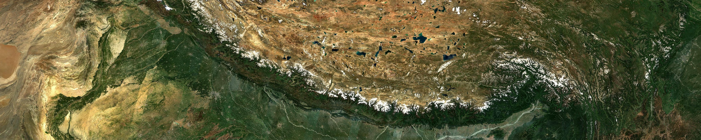
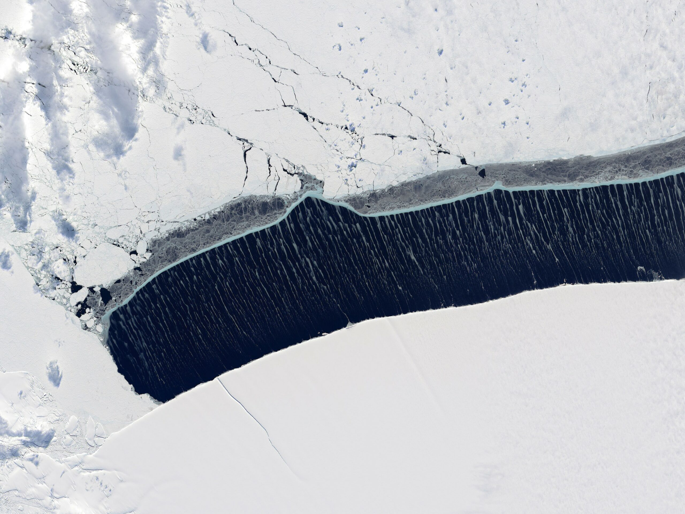

Keynote talks and problem-oriented working sessions with approximately 35 participants.

Workshop 2027
Scientific Imaging and Machine Learning Workshop
A small and highly interactive workshop connecting computer vision experts with domain scientists, and connect domain scientists across fields, to advance research using image-based data.
March 15–18, 2027San Juan, Puerto Rico
01 / Overview
Cross-domain imaging built around real problems.
The Scientific Imaging and Machine Learning Workshop is supported by the Community Initiative Fund by Schmidt Sciences. It brings together computer vision and machine learning method developers with domain scientists who work with image-based data, with an emphasis on community building for early-career researchers.
Scientific imaging workflows build around a core set of computer vision tasks. While these tasks are considered mature in computer vision, off-the-shelf models often struggle to generalize across scientific datasets collected by different instruments and in different environments. Currently solutions are often developed within individual disciplines. However, advances in one field frequently translate to others. For example, U-Net, originally developed for biomedical image segmentation, has now been widely used in almost all scientific imaging fields.
Participants will come from a range of fields working with image-based data, including but not limited to Earth science (satellite, radar, seismic imagery, and other remote sensing data), biomedical imaging (CT, X-ray, MRI, microscopy, endoscopy, and other biomedical images), astronomical observations, and robotics and autonomous driving.
Accommodation, breakfasts, and lunches are covered for participants.
A limited number of travel scholarships are available.
Puerto Rico is a U.S. territory. Travel between Puerto Rico and the U.S. mainland is domestic travel.

02 / Keynote speakers
Keynote speakers from a range of fields
Speakers are listed alphabetically by last name.
01
Nathan Jacobs
Computer vision & remote sensing
Washington University in St. Louis
Professor, Computer Science & Engineering
Vice Provost for Artificial Intelligence
02
Ulugbek “Bek” Kamilov
Biomedical imaging
University of Wisconsin–Madison
Leon and Elizabeth Janssen Associate Professor
03
Wenwen Li
Remote sensing & GeoAI
Arizona State University
Foundation Professor
Director, Spatial Analysis Research Center
04
Rémi Mégret
Image & video processing
University of Puerto Rico, Río Piedras
Assistant Professor in Computer Science
05
Loïc A. Royer
Biomedical imaging
Chan Zuckerberg Biohub San Francisco
Senior Group Leader
Director of Imaging AI
06
Rebecca Willett
Computer vision & astronomy
University of Chicago
Worah Family Professor, Statistics & Computer Science
Faculty Director of AI, Data Science Institute
03 / Workshop program
Come to make progress, not just to present
Bring your own imaging problem or extend your research impact. There are two ways to participate.
I have an imaging problem I want to solve.
What is the biggest imaging bottleneck holding back your research? Bring it to the workshop, learn whether scientists in other domains face similar obstacles, and work with computer vision experts and fellow domain scientists.
I have an imaging method I want to share.
If you have developed or adapted a computer vision (or scientific imaging) method to solve, or have the possibility to solve, a domain-specific imaging challenge, bring it and share it with other domain scientists and computer vision experts. This is an ideal venue to extend the impact of your work beyond your own domain.
- 01Pitch in five minutes
Focus on the problem you want to solve or the method you want to share.
- 02Match around a shared challenge
Join a small group centered on a bottleneck such as domain shift or memory efficiency.
- 03Working session
Members in the same group will work together for 1.5 days. Instead of developing a single joint project, you will work on the same technical bottleneck but focus on your own application.
- 04Share what you learned
On the final day, every group presents lessons from the working session.
Domain scientists will have substantial interaction with computer vision experts who specialize in their technical bottleneck and with peers facing the same obstacle in other fields. Computer vision experts, in turn, see firsthand where standard methods break down on domain-specific images, and thus identify high-impact imaging problems that remain unsolved.
Working-session award1,460 hours of AWS compute time
Each member of the winning group receives the equivalent of four compute hours per day for one year.
04 / Application
Apply by October 30, 2026.
Approximately 35 participants will be selected for this highly interactive workshop.
Eligibility
The workshop is open to master’s and PhD students, postdoctoral researchers, early-career researchers within 5 years of their highest degree, such as research scientist and faculty.
Application materials
- Completed online application form
- Curriculum vitae, no longer than two pages
- Statement of Interest, ideally one page and no longer than two pages, including figures and tables, excluding references
Upload the CV and Statement of Interest at the end of the application form. You will need to sign in a google account to fill out the form.
Statement of Interest
What to include in the Statement of Interest? Pick one of the following
I have an imaging problem I want to solve.
Describe a current imaging problem in your research that you plan to bring to the workshop. Explain why it is technically challenging, what method or conceptual barriers limit progress, and what practical progress you plan to make during the working session. Also discuss how solving this problem could have implications for imaging-related fields beyond your own domain.
I have an imaging method I want to share.
Describe a past method you developed or adapted to address a domain-specific imaging challenge that you plan to share at the workshop. Describe how you solved your problem. Also discuss how this approach may have broader applicability in other disciplines that rely heavily on imaging data and how cross-domain exchange could expand your approach’s impact.
Selection will consider understanding of method transferability, commitment to community building, and expected benefit from the workshop. Priority will be given to Schmidt Fellows and alumni. Late applications will not be considered.
05 / Logistics
Where is the workshop?
The workshop will be hosted at the Caribe Hilton in San Juan, Puerto Rico. The hotel will serve as an all-in-one venue for workshop activities and lodging.
Will there be travel support?
Yes. A limited number of travel scholarships are available. Hotel accommodation will be covered, so scholarship funds can be used for travel to and from San Juan, such as airfare.
Indicate your interest in the application form. Priority will be given to people from backgrounds underrepresented in imaging science and/or those who demonstrate strong financial need.
Can I participate locally from Puerto Rico?
Yes. Local participation is welcome. Hotel accommodation and travel scholarships cannot be provided to local participants; Uber or parking vouchers will be provided instead.
Does travel from the U.S. mainland count as international travel?
No. Puerto Rico is a U.S. territory, so travel between Puerto Rico and the U.S. mainland is domestic. International students traveling from U.S. in valid nonimmigrant status do not need a visa or a new admission for these trips. For guidance on your situation, contact your home institution’s international student office.
Will the workshop sponsor a U.S. visa application?
The workshop cannot sponsor visa applications. A letter of support for the visa application process may be provided on a case-by-case basis.
06 / Organizing team
Questions? Send us an email
Weijia (Emma) Liu
Schmidt AI in Science Fellow, UChicago, Department of Geophysical Sciences
liuwj@uchicago.eduRob Serafin
Schmidt AI in Science Fellow, UChicago, Department of Hematology and Oncology
robserafin@uchicago.eduVictoria Flores
Director, AI+Science Research Initiative